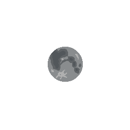

The Moon is Earth's dazzling, silver companion, lighting up the night sky with its soft, ethereal glow. It's a quiet, mysterious world of craters, mountains, and vast plains that has fascinated humans for centuries. While it may be a little more distant than your average friend, the Moon still manages to pull us in with its gravitational charm. It has a magical way of influencing tides, stirring up myths and dreams, and casting a serene glow over everything. One might say the Moon really rocks… but then again, it's made of rock!
